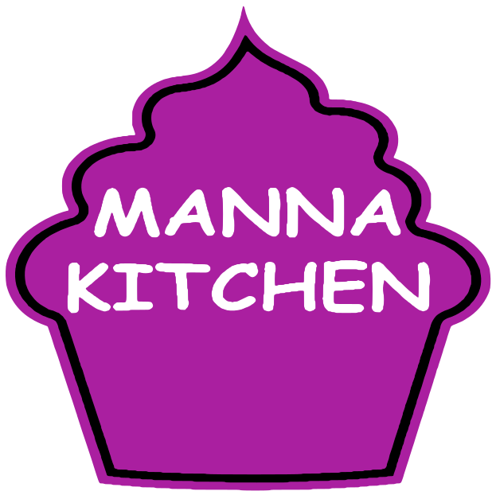
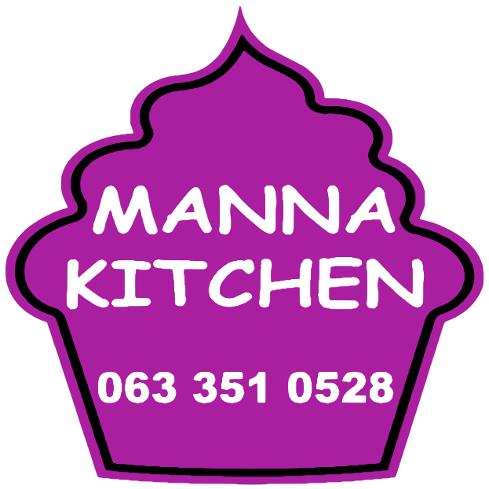
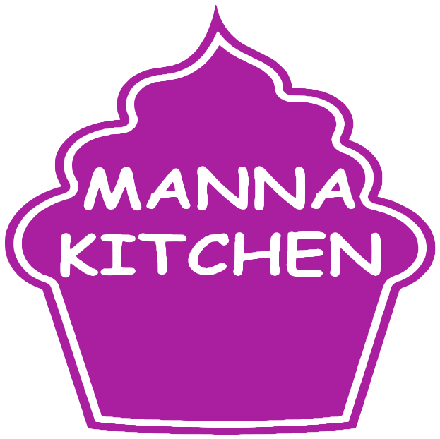

Manna Kitchen
Brand sheet. The cupcake badge is the logo; everything else is built from its purple, its lettering and the warm oat of the kitchen.
Brand sheet. The cupcake badge is the logo; everything else is built from its purple, its lettering and the warm oat of the kitchen.


Primary badge (left), horizontal lockup for the website header and documents (top right), badge with the phone number for stickers and packaging (bottom right).


One-colour versions are cut from the same artwork: the outline and lettering become see-through gaps, so they print on anything.
The mark is the cupcake silhouette with the badge's own "M". Use it for favicons, app icons and avatars where the full lettering would be unreadable.
Purple on oat is 5.5:1 (passes AA). Purple on clay is 4.1:1, so use it only for large or bold text there. White on purple is 6.2:1.
Vollkorn 600 for headlines and prices.
Hanken Grotesk 400 and 600 carries body copy, buttons and labels. It stays at 18 px or larger because many customers are older.
The hand-lettered "MANNA KITCHEN" belongs to the badge only. Never retype it in a font.